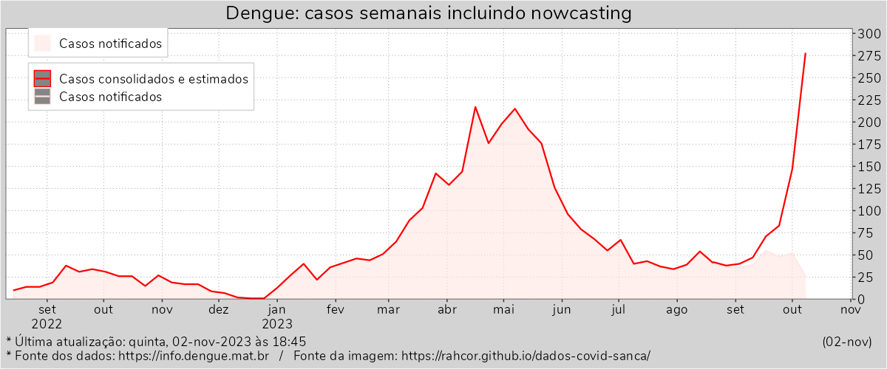

(Atualização toda segunda-feira às 18h30)(Página implementada recentemente. Podem ocorrer instabilidades.)

Dados coletados da API do InfoDengue/Fiocruz-FGV: https://info.dengue.mat.br/services/api
Script em R de coleta dos dados e geração dos gráficos: autoupdate-dengue-20220522.R
Construído com python e bibliotecas, pandoc e water.css.